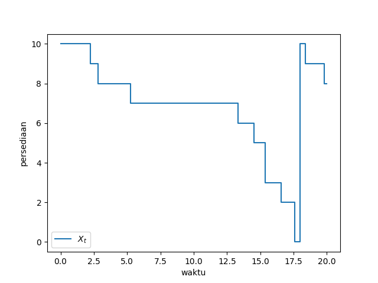
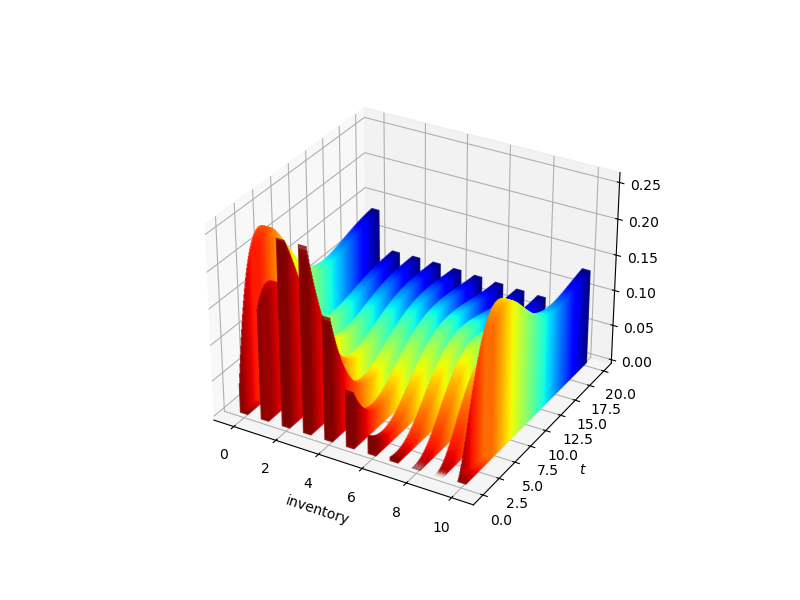
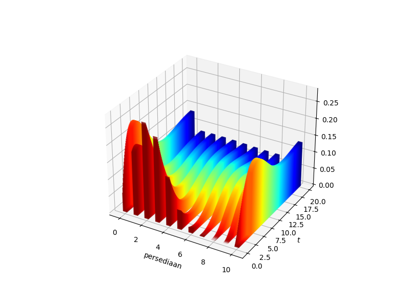

Sifat Markov
Selain yang tersedia di Anaconda, kuliah ini memerlukan pustaka berikut:
# Build luring hilir: perintah pemasangan paket dari sumber dihapus.Gambaran umum
Suatu proses stokastik waktu kontinu dikatakan memiliki sifat Markov jika masa lalu dan masa depannya independen bersyarat pada keadaan saat ini.
(Definisi yang lebih formal diberikan di bawah.)
Seperti akan kita lihat, sifat Markov memberlakukan struktur yang sangat kuat pada proses waktu kontinu.
Struktur ini menghasilkan berbagai hasil yang elegan dan kuat mengenai evolusi dan dinamika.
Pada saat yang sama, sifat Markov cukup umum untuk mencakup banyak masalah terapan, sebagaimana dijelaskan dalam pendahuluan sumber.
Kerangka
Dalam kuliah ini, ruang keadaan tempat dinamika berlangsung adalah himpunan terhitung, yang selanjutnya dilambangkan dengan \(S\), dengan elemen tipikal \(x, y\).
(Perhatikan bahwa “terhitung” dipahami mencakup pula himpunan berhingga.)
Mengenai notasi, selanjutnya \(\sum_{x \in S}\) disingkat menjadi \(\sum_x\), supremum \(\sup_{x \in S}\) disingkat menjadi \(\sup_x\), dan seterusnya.
Sebuah distribusi pada \(S\) adalah fungsi \(\phi\) dari \(S\) ke \(\RR_+\) dengan \(\sum_x \phi(x) = 1\).
Misalkan \(\dD\) menyatakan himpunan semua distribusi pada \(S\).
Untuk menghemat istilah, kita mendefinisikan sebuah matriks \(A\) pada \(S\) sebagai pemetaan dari \(S \times S\) ke \(\RR\).
Jika \(S\) berhingga, definisi ini mereduksi pada pengertian matriks yang biasa, dan, setiap kali Anda melihat ekspresi seperti \(A(x,y)\) di bawah, Anda dapat mengidentifikasikannya secara mental dengan notasi matriks yang lebih lazim, seperti \(A_{ij}\), jika diinginkan.
Hasil kali dua matriks \(A\) dan \(B\) didefinisikan oleh
\[ (A B)(x, y) = \sum_z A(x, z) B(z, y) \qquad ((x, y) \in S \times S) \]
Jika \(S\) berhingga, maka ini hanyalah perkalian matriks biasa.
Dalam pernyataan yang melibatkan aljabar matriks, kita selalu memperlakukan distribusi sebagai vektor baris, sehingga, untuk \(\phi \in \dD\) dan matriks \(A\) yang diberikan,
\[ (\phi A)(y) = \sum_x \phi(x) A(x, y) \]
Kita akan menggunakan impor berikut
import numpy as np
import scipy as sp
import matplotlib.pyplot as plt
import quantecon as qe
from numba import njit
from scipy.linalg import expm
from scipy.stats import binom
from matplotlib import cm
from mpl_toolkits.mplot3d import Axes3DProses Markov
Sekarang kita memperkenalkan definisi proses Markov, mula-mula meninjau kasus diskret lalu beralih ke waktu kontinu.
Waktu Diskret, Ruang Keadaan Berhingga
Proses Markov yang paling sederhana memiliki parameter waktu diskret dan ruang keadaan berhingga.
Untuk sementara, asumsikan bahwa \(S\) memiliki \(n\) elemen dan misalkan \(P\) adalah matriks Markov, yang berarti bahwa \(P(x,y) \geq 0\) dan \(\sum_y P(x,y) = 1\) untuk setiap \(x\).
Dalam penerapan, \(P(x, y)\) menyatakan probabilitas bertransisi dari \(x\) ke \(y\) dalam satu langkah.
Sebuah rantai Markov \((X_t)_{t \in \ZZ_+}\) pada \(S\) dengan matriks Markov \(P\) adalah barisan peubah acak yang memenuhi
\[ \PP\{X_{t+1} = y \,|\, X_0, X_1, \ldots, X_t \} = P (X_t, y) \]
dengan probabilitas satu untuk setiap \(y \in S\) dan sembarang \(t \in \ZZ_+\).
Selain menghubungkan probabilitas dengan matriks Markov, persamaan markovpropd menyatakan bahwa proses hanya bergantung pada riwayatnya melalui keadaan saat ini.
Kita ingat bahwa, jika \(X_t\) berdistribusi \(\phi\), maka \(X_{t+1}\) berdistribusi \(\phi P\).
Karena \(\phi\) dipahami sebagai vektor baris, artinya adalah
\[ (\phi P)(y) = \sum_x \phi(x) P(x, y) \qquad (y \in S) \]
Distribusi Gabungan
Secara umum, untuk matriks Markov \(P\) yang diberikan, dapat terdapat banyak rantai Markov \((X_t)\) yang memenuhi persamaan markovpropd.
Hal ini disebabkan oleh pengamatan yang lebih umum bahwa, untuk suatu distribusi \(\phi\) yang diberikan, kita dapat mengonstruksi banyak peubah acak yang berdistribusi \(\phi\).
(Latihan di bawah meminta satu contoh.)
Oleh karena itu, dalam arti tertentu, \(P\) merupakan objek yang lebih mendasar daripada \((X_t)\).
Ada cara lain untuk melihat arti penting mendasar dari \(P\), yaitu dengan mengonstruksi distribusi gabungan \((X_t)\) dari \(P\).
Misalkan \(S^\infty\) menyatakan ruang barisan bernilai di \(S\), yaitu \((x_0, x_1, x_2, \ldots)\).
Tetapkan kondisi awal \(\psi \in \dD\) dan matriks Markov \(P\) pada \(S\).
Distribusi gabungan rantai Markov \((X_t)\) yang memenuhi persamaan markovpropd dan \(X_0 \sim \psi\) adalah distribusi \(\mathbf P_\psi\) pada \(S^\infty\) sedemikian sehingga
\[ \PP\{ X_{t_1} = y_1, \ldots, X_{t_m} = y_m \} = \mathbf P_\psi\{ (x_t) \in S^\infty \,:\, x_{t_i} = y_i \text{ for } i = 1, \ldots m\} \]
untuk sembarang \(m\) bilangan bulat positif \(t_i\) dan \(m\) elemen \(y_i\) dari ruang keadaan \(S\).
(Distribusi gabungan proses waktu diskret ditentukan secara unik oleh nilainya pada kumpulan waktu berhingga — lihat, misalnya, Teorema 7.2 dalam Walsh (2012).)
Kita dapat mengonstruksi \(\mathbf P_\psi\) dengan terlebih dahulu mendefinisikan \(P_\psi^n\) pada produk Kartesius berhingga \(S^{n+1}\) melalui
\[ \mathbf P_\psi^n(x_0, x_1, \ldots, x_n) = \psi(x_0) P(x_0, x_1) \times \cdots \times P(x_{n-1}, x_n) \]
Untuk setiap rantai Markov \((X_t)\) yang memenuhi persamaan markovpropd dan \(X_0 \sim \psi\), pembatasan \((X_0, \ldots, X_n)\) memiliki distribusi gabungan \(\mathbf P_\psi^n\).
Ini adalah latihan dengan solusi di bawah.
Langkah terakhir adalah menunjukkan bahwa keluarga \((\mathbf P_\psi^n)\) yang didefinisikan untuk setiap \(n \in \NN\) dapat diperluas secara unik menjadi distribusi \(\mathbf P_\psi\) pada barisan tak berhingga dalam \(S^\infty\).
Kebenaran pernyataan ini mengikuti dari teorema Kolmogorov yang terkenal.
Jadi, \(P\) mendefinisikan distribusi gabungan \(\mathbf P_\psi\) jika dipasangkan dengan sembarang kondisi awal \(\psi\).
Perluasan ke Ruang Keadaan Tak Berhingga (Terhitung)
Ketika \(S\) tak berhingga, gagasan yang sama tetap berlaku.
Selaras dengan kasus berhingga, sebuah matriks Markov adalah pemetaan \(P\) dari \(S \times S\) ke \(\RR_+\) yang memenuhi
\[ \sum_y P(x, y) = 1 \text{ for all } x \in S \]
Definisi rantai Markov \((X_t)_{t \in \ZZ_+}\) pada \(S\) dengan matriks Markov \(P\) persis seperti dalam persamaan markovpropd.
Untuk matriks Markov \(P\) dan \(\phi \in \dD\) yang diberikan, kita mendefinisikan \(\phi P\) melalui persamaan update_rule.
Kemudian, seperti sebelumnya, \(\phi P\) dapat dipahami sebagai distribusi \(X_{t+1}\) ketika \(X_t\) berdistribusi \(\phi\).
Fungsi \(\phi P\) berada dalam \(\dD\) karena, berdasarkan persamaan update_rule, fungsi ini taknegatif dan
\[ \sum_y (\phi P)(y) = \sum_y \sum_x P(x, y) \phi(x) = \sum_x \sum_y P(x, y) \phi(x) = \sum_x \phi(x) = 1 \]
(Pertukaran urutan penjumlahan tak berhingga di sini dibenarkan oleh fakta bahwa semua elemennya taknegatif — suatu versi teorema Tonelli.)
Jika \(P\) dan \(Q\) adalah matriks Markov pada \(S\), maka, dengan menggunakan definisi dalam persamaan kernprod,
\[ (P Q)(x, y) := \sum_z P(x, z) Q(z, y) \]
Tidak sulit untuk memeriksa bahwa \(P Q\) juga merupakan matriks Markov pada \(S\).
Elemen-elemen \(P^k\), yaitu hasil kali ke-\(k\) dari \(P\) dengan dirinya sendiri, memberikan probabilitas transisi \(k\) langkah.
Sebagai contoh, kita memiliki
\[ P^k(x, y) = (P^{k-j} P^j)(x, y) = \sum_z P^{k-j}(x, z) P^j(z, y) \]
yang merupakan suatu versi persamaan Chapman–Kolmogorov (waktu diskret).
Persamaan persamaan kernprodk dapat diperoleh dari hukum probabilitas total: jika \((X_t)\) adalah rantai Markov dengan matriks Markov \(P\) dan kondisi awal \(X_0 = x\), maka
\[ \PP\{X_k = y\} = \sum_z \PP\{X_k = y \,|\, X_j=z\} \PP\{X_j=z\} \]
Seluruh pembahasan sebelumnya mengenai hubungan antara \(P\) dan distribusi gabungan \((X_t)\) ketika \(S\) berhingga tetap berlaku dalam kerangka saat ini.
Kasus Waktu Kontinu
Sebuah proses stokastik waktu kontinu pada \(S\) adalah koleksi \((X_t)\) dari peubah acak bernilai di \(S\), dengan \(X_t\) didefinisikan pada suatu ruang probabilitas bersama dan diindeks oleh \(t \in \RR_+\).
Misalkan \(I\) adalah matriks Markov pada \(S\) yang didefinisikan oleh \(I(x,y) = \mathbb 1\{x = y\}\).
Sebuah semigrup Markov adalah keluarga matriks Markov \((P_t)\) pada \(S\) yang memenuhi
- \(P_0 = I\),
- \(\lim_{t \to 0} P_t(x, y) = I(x,y)\) untuk setiap \(x,y\) dalam \(S\), dan
- sifat semigrup \(P_{s + t} = P_s P_t\) untuk setiap \(s, t \geq 0\).
Interpretasi \(P_t(x, y)\) adalah probabilitas berpindah dari keadaan \(x\) ke keadaan \(y\) dalam \(t\) satuan waktu.
Karena itu, wajar bahwa \(P_0(x,y) = 1\) jika \(x=y\) dan nol jika tidak, yang merupakan syarat 1.
Syarat 2 adalah kekontinuan terhadap \(t\), yang mungkin tampak membatasi, tetapi sebenarnya sangat ringan.
Untuk semua penerapan praktis, probabilitas tidak melompat — meskipun rantai \((X_t)\) sendiri tentu dapat melompat dari satu keadaan ke keadaan lain seiring berjalannya waktu.1
Sifat semigrup pada syarat 3 tidak lain adalah versi waktu kontinu dari persamaan Chapman–Kolmogorov.
Hal ini menjadi lebih jelas jika kita menuliskannya secara lebih eksplisit sebagai
\[ P_{s+t}(x, y) = \sum_z P_s(x, z) P_t(z, y) \]
Suatu proses stokastik \((X_t)\) disebut rantai Markov waktu kontinu (homogen terhadap waktu) pada \(S\) dengan semigrup Markov \((P_t)\) jika
\[ \PP\{X_{s + t} = y \,|\, \fF_s \} = P_t (X_s, y) \]
dengan probabilitas satu untuk setiap \(y \in S\) dan \(s, t \geq 0\).
Di sini \(\fF_s\) adalah riwayat \((X_r)_{r \leq s}\) dari proses tersebut hingga waktu \(s\).
Jika Anda seorang ekonom, Anda mungkin menyebut \(\fF_s\) sebagai “himpunan informasi” pada waktu \(s\).
Jika Anda mengenal teori ukuran, Anda dapat memahami \(\fF_s\) sebagai \(\sigma\)-aljabar yang dibangkitkan oleh \((X_r)_{r \leq s}\).
Sejalan dengan kasus waktu diskret, distribusi gabungan \((X_t)\) ditentukan oleh semigrup Markov beserta suatu kondisi awal.
Distribusi ini didefinisikan pada himpunan semua fungsi kontinu dari kanan \(\RR_+ \ni t \mapsto x_t \in S\), yang kita sebut \(rcS\).
Selanjutnya, distribusi berdimensi hingga pada \(rcS\) dibangun dengan menggunakan ekspresi yang serupa dengan persamaan mathjointd.
Terakhir, teorema perluasan Kolmogorov diterapkan, serupa dengan kasus waktu diskret.
Korolari 6.4 dari Le Gall (2016) memberikan perincian lengkap.
Rantai Kanonik
Untuk semigrup Markov \((P_t)\) pada \(S\) yang diberikan, apakah selalu ada rantai Markov waktu kontinu \((X_t)\) sedemikian sehingga persamaan markovprop berlaku?
Jawabannya adalah ya.
Sebagai ilustrasi, pilih sembarang semigrup Markov \((P_t)\) pada \(S\) dan tetapkan kondisi awal \(\psi\).
Selanjutnya, buat distribusi gabungan \(\mathbf P_\psi\) yang bersesuaian pada \(rcS\), sebagaimana dijelaskan di atas.
Sekarang, untuk setiap \(t \geq 0\), misalkan \(\pi_t\) adalah proyeksi waktu \(t\) pada \(rcS\), yang memetakan setiap fungsi kontinu dari kanan \((x_\tau)\) ke nilainya pada waktu \(t\), yaitu \(x_t\).
Terakhir, misalkan \(X_t\) adalah fungsi bernilai di \(S\) pada \(rcS\) yang didefinisikan di \((x_\tau) \in rcS\) oleh \(\pi_t ( (x_\tau))\).
Dengan kata lain, setelah \(\mathbf P_\psi\) memilih suatu lintasan waktu \((x_\tau) \in rcS\), rantai Markov \((X_t)\) hanya melaporkan lintasan waktu tersebut.
Dengan demikian, \((X_t)\) secara otomatis memiliki distribusi yang benar.
Rantai \((X_t)\) yang dikonstruksi dengan cara ini disebut rantai kanonik untuk semigrup \((P_t)\) dan kondisi awal \(\psi\).
Simulasi dan Konstruksi Probabilistik
Meskipun kita telah menjawab pertanyaan keberadaan secara afirmatif, konstruksi kanonik tersebut cukup abstrak.
Selain itu, hanya ada sedikit informasi tentang cara menyimulasikan rantai semacam itu.
Untungnya, ternyata ada cara yang lebih konkret untuk membangun rantai Markov waktu kontinu dari objek-objek yang mendeskripsikan distribusinya.
Kita akan mempelajarinya dalam kuliah lanjutan tentang semigrup Markov waktu kontinu.
Implikasi Sifat Markov
Sifat Markov membawa beberapa implikasi kuat yang tidak langsung tampak.
Mari luangkan waktu untuk menelaahnya.
Contoh: Kegagalan Sifat Markov
Mari kita lihat bagaimana sifat Markov dapat gagal melalui pembahasan yang intuitif, bukan formal.
Misalkan \((X_t)\) adalah proses stokastik waktu kontinu dengan ruang keadaan \(S = \{0, 1\}\).
Proses dimulai dari \(0\) dan diperbarui sebagai berikut:
- Ambil \(W\) secara independen dari suatu distribusi Pareto tetap.
- Pertahankan \((X_t)\) pada keadaannya saat ini selama \(W\) satuan waktu, lalu beralih ke keadaan lainnya.
- Kembali ke langkah 1.
Berapakah probabilitas bahwa \(X_{s+h} = i\) jika diketahui sekaligus riwayat \((X_r)_{r \leq s}\) dan informasi saat ini \(X_s = i\)?
Jika \(h\) kecil, probabilitas ini mendekati probabilitas bahwa tidak terjadi peralihan selama interval waktu \((s, s+h]\).
Untuk menghitung probabilitas ini, akan berguna jika kita mengetahui berapa lama proses telah berada pada keadaan \(i\) saat ini.
Hal ini karena distribusi Pareto tidak bersifat tanpa ingatan.
(Dengan distribusi Pareto, jika kita mengetahui bahwa \(X_t\) telah berada pada \(i\) dalam waktu lama, maka peralihan dalam waktu dekat menjadi lebih mungkin.)
Akibatnya, riwayat sebelum \(X_s\) berguna untuk memprediksi \(X_{s+h}\), bahkan ketika kita mengetahui \(X_s\).
Dengan demikian, sifat Markov gagal dipenuhi.
Pembatasan yang Diberlakukan oleh Sifat Markov
Dari pembahasan di atas, kita melihat bahwa, untuk rantai Markov waktu kontinu, waktu tunggu di antara lompatan harus bersifat tanpa ingatan.
Ingat bahwa, menurut teorema keunikan eksponensial, satu-satunya distribusi bersifat tanpa ingatan dengan dukungan pada \(\RR_+\) adalah distribusi eksponensial.
Oleh karena itu, rantai Markov waktu kontinu tinggal pada setiap keadaan selama suatu waktu yang berdistribusi eksponensial, kemudian melompat.
Cara pemilihan keadaan baru juga harus memenuhi sifat Markov, yang menambahkan pembatasan lain.
Ringkasnya, kita telah memahami hal-hal berikut mengenai rantai Markov waktu kontinu:
- Waktu tinggal merupakan hasil pengambilan independen dari distribusi eksponensial.
- Keadaan baru dipilih secara
Markovian, independen dari masa lalu jika keadaan saat ini diketahui.
Kita hanya perlu memperjelas perincian langkah-langkah ini untuk memperoleh deskripsi yang lengkap.
Contoh Proses Markov
Mari kita lihat beberapa contoh proses yang memiliki sifat Markov.
Contoh: Proses Poisson
Proses Poisson yang dibahas dalam kuliah sebelumnya merupakan proses Markov pada ruang keadaan \(\ZZ_+\).
Untuk memperoleh semigrup Markov, kita amati bahwa, untuk \(k \geq j\),
\[ \PP\{N_{s + t} = k \,|\, N_s = j\} = \PP\{N_{s + t} - N_s = k - j \,|\, N_s = j\} = \PP\{N_{s + t} - N_s = k - j\} \]
dengan langkah terakhir merupakan akibat dari independensi inkremen.
Dari stasioneritas inkremen, kita memperoleh
\[ \PP\{N_{s + t} - N_s = k - j\} = \PP\{N_t = k - j\} = e^{-\lambda t} \frac{ (\lambda t)^{k-j} }{(k-j)!} \]
Ringkasnya, semigrup Markov tersebut adalah
\[ P_t(j, k) = e^{-\lambda t} \frac{ (\lambda t)^{k-j} }{(k-j)!} \]
ketika \(j \leq k\), sedangkan \(P_t(j, k) = 0\) untuk kasus lainnya.
Rangkaian kesamaan ini diperoleh dengan \(N_s = j\) untuk sebarang \(j\), sehingga kita dapat mengganti \(j\) dengan \(N_s\) dalam persamaan poissemi untuk memverifikasi sifat Markov persamaan markovprop bagi proses Poisson.
Berdasarkan persamaan poissemi, setiap \(P_t\) merupakan matriks Markov dan \((P_t)\) merupakan semigrup Markov.
Bukti sifat semigrup diberikan sebagai latihan dengan penyelesaian di bawah.2
Model Dinamika Persediaan
Misalkan \(X_t\) adalah persediaan suatu perusahaan pada waktu \(t\), dengan nilai pada bilangan bulat \(0, 1, \ldots, b\).
Jika \(X_t > 0\), seorang pelanggan tiba setelah \(W\) satuan waktu, dengan \(W \sim \Exp (\lambda)\) untuk suatu \(\lambda > 0\) yang tetap.
Pada saat tiba, setiap pelanggan membeli \(\min\{U, X_t\}\) unit, dengan \(U\) merupakan hasil pengambilan IID dari distribusi geometrik yang dimulai dari 1, bukan 0:
\[ \PP\{U = k\} = (1-\alpha)^{k-1} \alpha \qquad (k = 1, 2, \ldots, \; \alpha \in (0, 1)) \]
Jika \(X_t = 0\), tidak ada pelanggan yang tiba dan perusahaan memesan \(b\) unit.
Pesanan tiba setelah penundaan selama \(D\) satuan waktu, dengan \(D \sim \Exp (\lambda)\).
(Di sini kita menggunakan \(\lambda\) yang sama hanya demi kemudahan, untuk menyederhanakan pemaparan.)
Representasi
Proses persediaan melompat ke suatu nilai baru ketika pelanggan baru tiba atau ketika persediaan baru tiba.
Di antara waktu-waktu kedatangan tersebut, proses bernilai konstan.
Oleh karena itu, untuk melacak \(X_t\), cukup melacak waktu lompatan dan nilai baru yang dicapai pada setiap lompatan.
Selanjutnya, kita menyatakan waktu lompatan dengan \(\{J_k\}\) dan nilai pada saat lompatan dengan \(\{Y_k\}\).
Kemudian kita membangun proses keadaan melalui
\[ X_t = \sum_{k \geq 0} Y_k \mathbb 1\{J_k \leq t < J_{k+1}\} \qquad (t \geq 0) \]
Simulasi
Mari simulasikan proses ini, dimulai dari \(X_0 = b\).
Catatan editorial hilir. Uraian sumber menyebut keadaan awal 0, tetapi docstring dan inisialisasi
J, Y = 0, bmenetapkan keadaan awalb. Kode sumber dipertahankan; uraian pembaca diselaraskan dengan implementasi.
Seperti di atas,
- \(J_k\) adalah waktu lompatan ke-\(k\) (naik atau turun) dalam persediaan.
- \(Y_k\) adalah jumlah persediaan setelah lompatan ke-\(k\).
- \((X_t)\) didefinisikan dari objek-objek ini melalui persamaan xfromy.
Berikut adalah fungsi yang menghasilkan dan mengembalikan satu lintasan \(t \mapsto X_t\).
(Pada tahap ini kita tidak mengejar efisiensi komputasi.)
def sim_path(T=10, seed=123, λ=0.5, α=0.7, b=10):
"""
Generate a path for inventory starting at b, up to time T.
Return the path as a function X(t) constructed from (J_k) and (Y_k).
"""
J, Y = 0, b
J_vals, Y_vals = [J], [Y]
np.random.seed(seed)
while True:
W = np.random.exponential(scale=1/λ) # W ~ Exp(λ)
J += W
J_vals.append(J)
if J >= T:
break
# Update Y
if Y == 0:
Y = b
else:
U = np.random.geometric(α)
Y = Y - min(Y, U)
Y_vals.append(Y)
Y_vals = np.array(Y_vals)
J_vals = np.array(J_vals)
def X(t):
if t == 0.0:
return Y_vals[0]
else:
k = np.searchsorted(J_vals, t)
return Y_vals[k-1]
return XMari kita buat grafik proses \((X_t)\).
T = 20
X = sim_path(T=T)
grid = np.linspace(0, T, 100)
fig, ax = plt.subplots()
ax.step(grid, [X(t) for t in grid], label="$X_t$")
ax.set(xlabel="waktu", ylabel="persediaan")
ax.legend()
plt.show()
Sesuai dugaan, persediaan menurun lalu melonjak kembali ke \(b\).
Rantai Lompatan Tertanam
Dalam model seperti yang dijelaskan di atas, proses waktu diskret tertanam \((Y_k)\) disebut “rantai lompatan tertanam”.
Mudah dilihat bahwa \((Y_k)\) merupakan rantai Markov waktu diskret dengan ruang keadaan berhingga.
Matriks Markovnya \(K\) diberikan oleh \(K(x, y) = \mathbb 1\{y=b\}\) ketika \(x=0\) dan, ketika \(0 < x \leq b\),
\[ K(x, y) = \begin{cases} \mathbb 0 & \text{ if } y \geq x \\ \PP\{x - U = y\} = (1-\alpha)^{x-y-1} \alpha & \text{ if } 0 < y < x \\ \PP\{U \geq x\} = (1-\alpha)^{x-1} & \text{ if } y = 0 \end{cases} \]
Sifat Markov
Model persediaan yang baru saja dijelaskan memiliki sifat Markov tepat karena
- rantai lompatan \((Y_k)\) bersifat Markov dalam waktu diskret dan
- waktu tinggal merupakan hasil pengambilan independen dari distribusi eksponensial.
Alih-alih memberikan perincian lebih lanjut mengenai hal-hal ini di sini, mari terlebih dahulu kita uraikan suatu kerangka yang lebih umum, tempat argumennya akan menjadi lebih jelas dan lebih berguna.
Proses Lompatan dengan Laju Konstan
Contoh-contoh yang sejauh ini kita bahas merupakan kasus khusus proses Markov dengan intensitas lompatan konstan.
Proses-proses ini ternyata sangat representatif (meskipun asumsi intensitas lompatan konstan akan dilonggarkan kemudian).
Sekarang mari kita rangkum model tersebut beserta sifat-sifatnya.
Konstruksi
Data untuk proses Markov pada \(S\) dengan laju lompatan konstan adalah
- parameter \(\lambda > 0\) yang disebut laju lompatan, yang mengatur intensitas lompatan, dan
- matriks Markov \(K\) pada \(S\), yang disebut matriks lompatan.
Untuk menjalankan proses tersebut, kita juga memerlukan kondisi awal \(\psi \in \dD\).
Proses \((X_t)\) dikonstruksi dengan menetap di setiap keadaan selama selang waktu eksponensial berparameter laju \(\lambda\), lalu berpindah ke keadaan baru menurut \(K\).
Secara lebih terperinci, konstruksinya adalah sebagai berikut.
Rantai Lompatan Berlaju Konstan Masukan \(\psi \in \dD\), konstanta positif \(\lambda\), matriks Markov \(K\)
Keluaran Rantai Markov \((X_t)\)
- ambil sampel \(Y_0\) dari \(\psi\)
- tetapkan \(k = 1\) dan \(J_0 = 0\)
- ambil sampel \(W_k\) dari Exp\((\lambda)\) dan tetapkan \(J_k = J_{k-1} + W_k\)
- tetapkan \(X_t = Y_{k-1}\) untuk setiap \(t\) yang memenuhi \(J_{k-1} \leq t < J_k\).
- ambil sampel \(Y_k\) dari \(K(Y_{k-1}, \cdot)\)
- tetapkan \(k = k+1\) dan kembali ke langkah 3.
Cara lain yang lebih ringkas untuk menyatakan proses yang sama adalah dengan mengambil
- \((N_t)\) sebagai proses Poisson dengan laju \(\lambda\), dan
- \((Y_k)\) sebagai rantai Markov waktu diskret dengan matriks Markov \(K\),
lalu menetapkan
\[ X_t := Y_{N_t} \text{ for all } t \geq 0 \]
Seperti sebelumnya, proses waktu diskret \((Y_k)\) disebut rantai lompatan tertanam.
(Jangan keliru membedakannya dari \((X_t)\), yang sering disebut “proses lompatan” atau “rantai lompatan” karena proses itu berpindah keadaan melalui lompatan.)
Peubah-peubah \((W_k)\) disebut waktu tunggu atau waktu tinggal.
Contoh
Proses Poisson dengan laju \(\lambda\) adalah proses lompatan pada \(S = \ZZ_+\).
Waktu tinggalnya jelas berdistribusi eksponensial dengan parameter laju konstan \(\lambda\).
Matriks lompatannya adalah \(K(i, j) = \mathbb 1\{j = i+1\}\), sehingga keadaan bertambah satu pada setiap \(J_k\).
Model persediaan juga merupakan proses lompatan dengan laju konstan \(\lambda\), kali ini pada \(S = \{0, 1, \ldots, b\}\).
Matriks lompatannya diberikan dalam persamaan ijumpkern.
Sifat Markov
Mari kita tunjukkan bahwa proses lompatan \((X_t)\) yang dikonstruksi di atas memenuhi sifat Markov, sekaligus memperoleh semigrup Markov-nya.
Kita akan menggunakan dua fakta:
- rantai lompatan \((Y_k)\) memiliki sifat Markov dalam waktu diskret, dan
- proses Poisson memiliki inkremen stasioner yang saling bebas.
Dari kedua fakta ini, secara intuitif distribusi \(X_{t+s}\) dengan syarat seluruh riwayat \(\fF_s = \{ (N_r)_{r \leq s}, (Y_k)_{k \leq N_s} \}\) hanya bergantung pada \(X_s\).
Memang, jika kita mengetahui \(X_s\), kita cukup
- hasil memulai ulang proses Poisson proses Poisson dari \(N_s\), lalu
- mulai dari \(X_s = Y_{N_s}\), memperbarui rantai lompatan tertanam \((Y_k)\) menurut \(K\) setiap kali terjadi lompatan baru.
Mari kita tuliskan hal ini secara lebih matematis.
Dengan menetapkan \(y \in S\) dan \(s, t \geq 0\), kita memperoleh
\[ \PP\{X_{s + t} = y \,|\, \fF_s \} = \PP\{Y_{N_{s + t}} = y \,|\, \fF_s \} = \PP\{Y_{N_s + N_{s + t} - N_s} = y \,|\, \fF_s \} \]
Dengan hasil memulai ulang proses Poisson bahwa \(N_{s + t} - N_s\) berdistribusi Poisson dengan parameter \(t \lambda\) dan bebas dari riwayat \(\fF_s\), kita dapat menuliskan tampilan di atas sebagai
\[ \PP\{X_{s + t} = y \,|\, \fF_s \} = \sum_{k \geq 0} \PP\{Y_{N_s + k} = y \,|\, \fF_s \} \frac{(t \lambda )^k}{k!} e^{-t \lambda} \]
Karena rantai lompatan tertanam bersifat Markov dengan matriks Markov \(K\), kita dapat menyederhanakannya lebih lanjut menjadi
\[ \PP\{X_{s + t} = y \,|\, \fF_s \} = \sum_{k \geq 0} K^k(Y_{N_s}, y) \frac{(t \lambda )^k}{k!} e^{-t \lambda} = \sum_{k \geq 0} K^k(X_s, y) \frac{(t \lambda )^k}{k!} e^{-t \lambda} \]
Karena ekspresi di atas hanya bergantung pada \(X_s\), kita telah membuktikan bahwa \((X_t)\) memiliki sifat Markov.
Semigrup Transisi
Semigrup Markov dapat diperoleh dari hasil terakhir kita dengan mengondisikan pada \(X_s = x\), sehingga
\[ P_t(x, y) = \PP\{X_{s + t} = y \,|\, X_s = x \} = e^{-t \lambda} \sum_{k \geq 0} K^k(x, y) \frac{(t \lambda )^k}{k!} \]
Jika \(S\) berhingga, kita dapat menuliskannya dalam bentuk matriks dan menggunakan definisi eksponensial matriks untuk memperoleh
\[ P_t = e^{-t \lambda} \sum_{k \geq 0} \frac{(t \lambda K)^k}{k!} = e^{-t \lambda} e^{t \lambda K} = e^{t \lambda (K - I)} \]
Ini merupakan representasi semigrup Markov yang sederhana dan elegan, yang memudahkan kita memahami dan menganalisis dinamika distribusi.
Sebagai contoh, jika \(X_0\) berdistribusi \(\psi\), maka \(X_t\) berdistribusi
\[ \psi P_t = \psi e^{t \lambda (K - I)} \]
Kita hanya perlu menyubstitusikan \(\lambda\) dan \(K\) untuk memperoleh seluruh aliran \(t \mapsto \psi P_t\).
Kita akan segera memperluas representasi ini ke kasus ketika \(S\) tak berhingga.
Aliran Distribusi untuk Model Persediaan
Mari kita terapkan gagasan-gagasan ini pada model persediaan yang dijelaskan di atas.
Kita tetapkan
- parameter \(\alpha\), \(b\), dan \(\lambda\) dalam model persediaan, serta
- kondisi awal \(X_0 \sim \psi_0\), dengan \(\psi_0\) sebagai distribusi sembarang pada \(S\).
Ruang keadaan \(S\) ditetapkan sebagai \(\{0, \ldots, b\}\) dan matriks \(K\) didefinisikan oleh persamaan ijumpkern.
Sekarang kita majukan waktu.
Kita ingin menghitung aliran distribusi \(t \mapsto \psi_t\), dengan \(\psi_t\) sebagai distribusi \(X_t\).
Menurut teori yang dikembangkan di atas, kita memiliki dua pilihan.
Pilihan 1 adalah menggunakan simulasi.
Langkah pertama adalah menyimulasikan banyak realisasi yang saling bebas dari proses \((X_t^m)_{m=1}^M\).
(Di sini \(m\) menunjukkan nomor simulasi \(m\), yang dapat dipandang sebagai realisasi untuk perusahaan \(m\).)
Selanjutnya, untuk setiap \(t\) tertentu, kita definisikan \(\hat \psi_t \in \dD\) sebagai histogram pengamatan pada waktu \(t\), atau secara ekuivalen sebagai distribusi penampang pada \(t\):
\[ \hat \psi_t(x) := \frac{1}{M} \sum_{m=1}^M \mathbb 1\{X_t^m = x\} \qquad (x \in S) \]
Jika \(M\) besar, \(\hat \psi_t(x)\) akan mendekati \(\PP\{X_t = x\}\) menurut hukum bilangan besar.
Dengan kata lain, pada limit kita memperoleh kembali \(\psi_t\).
Pilihan 2 adalah menyubstitusikan parameter ke ruas kanan persamaan distflowconst dan menghitung \(\psi_t\) sebagai \(\psi_0 P_t\).
Gambar di bawah dibuat menggunakan pilihan 2, dengan \(\alpha = 0.6\), \(\lambda = 0.5\), dan \(b=10\).
Sebagai distribusi awal, kita memilih distribusi binomial.
Karena kita tidak dapat menghitung seluruh aliran tak terhitung \(t \mapsto \psi_t\), kita bergerak maju sebanyak 200 langkah dengan kenaikan waktu \(h=0.1\).
Pada gambar tersebut, warna panas menunjukkan kondisi awal dan waktu-waktu awal (sehingga distribusi “mendingin” seiring waktu).

Dalam latihan (beserta solusi) Anda akan diminta mencoba mereproduksi gambar ini.
Latihan
Perhatikan distribusi biner (Bernoulli) dengan hasil \(0\) dan \(1\) yang masing-masing memiliki probabilitas \(0.5\).
Konstruksikan dua peubah acak berbeda yang memiliki distribusi ini.
Solusi Salah satu contoh adalah mengambil \(U\) yang berdistribusi seragam pada \((0, 1)\), lalu menetapkan \(X=0\) jika \(U < 0.5\) dan \(1\) jika tidak.
Dengan demikian, \(X\) memiliki distribusi yang diinginkan.
Sebagai alternatif, kita dapat mengambil \(Z\) yang berdistribusi normal standar, lalu menetapkan \(X=0\) jika \(Z < 0\) dan \(1\) jika tidak.
Tunjukkan melalui perhitungan langsung bahwa matriks-matriks Poisson \((P_t)\) yang didefinisikan dalam persamaan poissemi memenuhi sifat semigrup persamaan chapkol_ct2.
Petunjuk
- Ingat bahwa \(P_t(j, k) = 0\) apabila \(j > k\).
- Pertimbangkan penggunaan rumus binomial.
Solusi Dengan menetapkan \(s, t \in \RR_+\) dan \(j \leq k\), kita memperoleh
\[ \begin{aligned} \sum_{i \geq 0} P_s(j, i) P_t(i, k) & = e^{-\lambda (s+t)} \sum_{j \leq i \leq k} \frac{ (\lambda s)^{i-j} }{(i-j)!} \frac{ (\lambda t)^{k-i} }{(k-i)!} \\ & = e^{-\lambda (s+t)} \lambda^{k-j} \sum_{0 \leq \ell \leq k-j} \frac{ s^\ell }{\ell!} \frac{ t^{k-j - \ell} }{(k-j - \ell)!} \\ & = e^{-\lambda (s+t)} \lambda^{k-j} \sum_{0 \leq \ell \leq k-j} \binom{k-j}{\ell} \frac{s^\ell t^{k-j - \ell}}{(k-j)!} \end{aligned} \]
Dengan menerapkan rumus binomial, kita dapat menuliskannya sebagai
\[ \sum_{i \geq 0} P_s(j, i) P_t(i, k) = e^{-\lambda (s+t)} \frac{(\lambda (s + t))^{k-j}}{(k-j)!} = P_{s+t}(j, k) \]
Jadi, persamaan chapkol_ct2 berlaku dan sifat semigrup terpenuhi.
Perhatikan distribusi pada \(S^{n+1}\) yang sebelumnya ditampilkan dalam persamaan mathjointd, yaitu
\[ \mathbf P_\psi^n(x_0, x_1, \ldots, x_n) = \psi(x_0) P(x_0, x_1) \times \cdots \times P(x_{n-1}, x_n) \]
Tunjukkan bahwa, untuk setiap rantai Markov \((X_t)\) yang memenuhi persamaan markovpropd dan \(X_0 \sim \psi\), pembatasan \((X_0, \ldots, X_n)\) memiliki distribusi gabungan \(\mathbf P_\psi^n\).
Solusi Misalkan \((X_t)\) adalah rantai Markov yang memenuhi persamaan markovpropd dan \(X_0 \sim \psi\).
Untuk \(n=0\), kita memiliki \(\mathbf P_\psi^n = \mathbf P_\psi^0 = \psi\), dan hal ini sesuai dengan distribusi pembatasan \((X_0, \ldots, X_n) = (X_0)\).
Sekarang andaikan pernyataan yang sama berlaku untuk sembarang \(n-1\), dalam arti bahwa distribusi \((X_0, \ldots, X_{n-1})\) sama dengan \(\mathbf P_\psi^{n-1}\) sebagaimana didefinisikan di atas.
Maka
\[ \PP \{X_0 = x_0, \ldots, X_n = x_n\} = \PP \{X_n = x_n \,|\, X_0 = x_0, \ldots, X_{n-1} = x_{n-1} \} \\ \times \PP \{X_0 = x_0, \ldots, X_{n-1} = x_{n-1}\} \]
Dari sifat Markov dan hipotesis induksi, ruas kanan sama dengan
\[ P (x_{n-1}, x_n ) \mathbf P_\psi^{n-1}(x_0, x_1, \ldots, x_{n-1}) = P (x_{n-1}, x_n ) \psi(x_0) P(x_0, x_1) \times \cdots \times P(x_{n-2}, x_{n-1}) \]
Ekspresi terakhir sama dengan \(\mathbf P_\psi^n\), sehingga pembuktian selesai.
Cobalah membuat versi Anda sendiri dari gambar gambar aliran distribusi.
Pada koreksi hilir di bawah, kondisi awalnya adalah
ψ_0 = binom.pmf(states, b, 0.25), sedangkan
n = b + 1 menyatakan banyaknya keadaan dan
states = np.arange(n) mencakup seluruh ruang keadaan \(\{0, \ldots, b\}\).
Solusi
Berikut adalah salah satu pendekatan.
Catatan koreksi hilir. Sumber memakai
n = b + 1 sebagai banyaknya keadaan sekaligus sebagai
argumen banyaknya percobaan dalam
binom.pmf(states, n, 0.25). Karena states
hanya mencakup \(0,\ldots,b\), pilihan
tersebut menghilangkan massa positif \(0.25^{b+1}\) pada hasil \(b+1\) dan tidak berjumlah tepat satu.
Solusi terjemahan mempertahankan n = b + 1 dan
states = np.arange(n) untuk mengindeks keadaan, tetapi
memakai b sebagai banyaknya percobaan binomial agar
dukungan lengkapnya tepat \(S=\{0,\ldots,b\}\). Otoritas sumber tetap
dipertahankan secara terpisah tanpa perubahan.
(Pernyataan yang melibatkan glue bersifat khusus untuk
buku ini dan dapat dihapus oleh kebanyakan pembaca. Pernyataan tersebut
menyimpan keluaran agar dapat ditampilkan di bagian lain.)
α = 0.6
λ = 0.5
b = 10
n = b + 1
states = np.arange(n)
I = np.identity(n)
K = np.zeros((n, n))
K[0, -1] = 1
for i in range(1, n):
for j in range(0, i):
if j == 0:
K[i, j] = (1 - α)**(i-1)
else:
K[i, j] = α * (1 - α)**(i-j-1)
def P_t(ψ, t):
return ψ @ expm(t * λ * (K - I))
def plot_distribution_dynamics(ax, ψ_0, steps=200, step_size=0.1):
ψ = ψ_0
t = 0.0
colors = cm.jet_r(np.linspace(0.0, 1, steps))
for i in range(steps):
ax.bar(states, ψ, zs=t, zdir='y',
color=colors[i], alpha=0.8, width=0.4)
ψ = P_t(ψ, t=step_size)
t += step_size
ax.set_xlabel('persediaan')
ax.set_ylabel('$t$')
ψ_0 = binom.pmf(states, b, 0.25)
fig = plt.figure(figsize=(8, 6))
ax = fig.add_subplot(111, projection='3d')
plot_distribution_dynamics(ax, ψ_0)
# Build luring hilir: impor glue khusus buku dihapus.
# Build luring hilir: keluaran gambar ditangkap langsung.
# Build luring hilir: penulisan ke pohon sumber beku dinonaktifkan.
plt.show()
Pada tingkat teknis, kekontinuan dari kanan lintasan \((X_t)\) mengimplikasikan syarat 2, sebagaimana dibuktikan dalam Teorema 2.12 dari Liggett (2010). Kekontinuan dari kanan lintasan memungkinkan lompatan, tetapi mensyaratkan hanya ada berhingga banyak lompatan dalam setiap interval terbatas.↩︎
Dalam definisi \(P_t\) pada persamaan poissemi, kita menggunakan konvensi bahwa \(0^0 = 1\), yang menghasilkan \(P_0 = I\) dan \(\lim_{t \to 0} P_t(j, k) = I(j,k)\) untuk semua \(j,k\). Fakta-fakta ini, bersama dengan sifat semigrup, menyiratkan bahwa \((P_t)\) merupakan semigrup Markov yang valid.↩︎